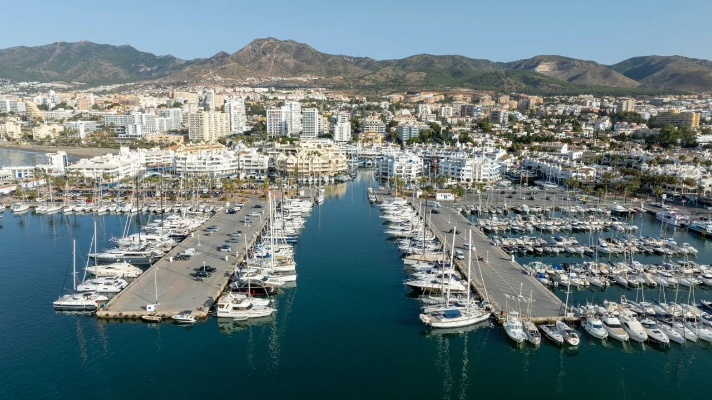
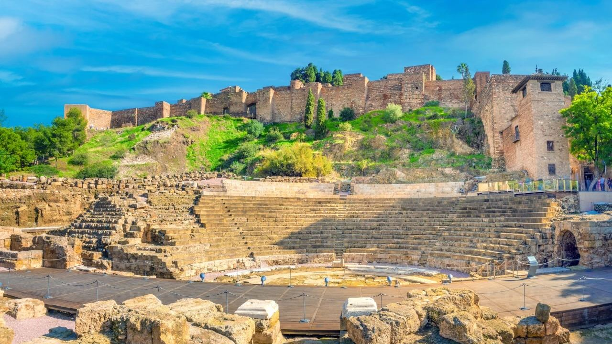
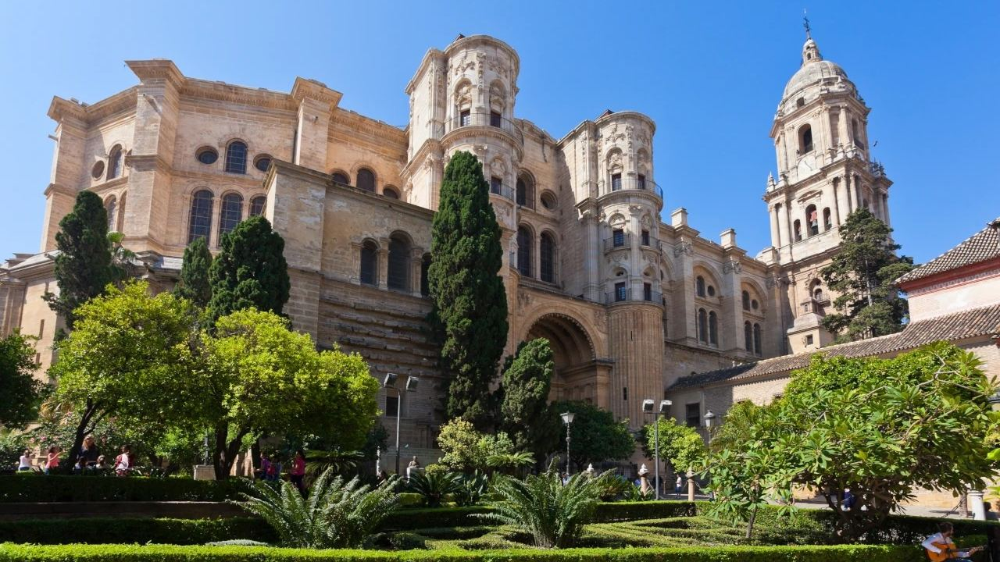
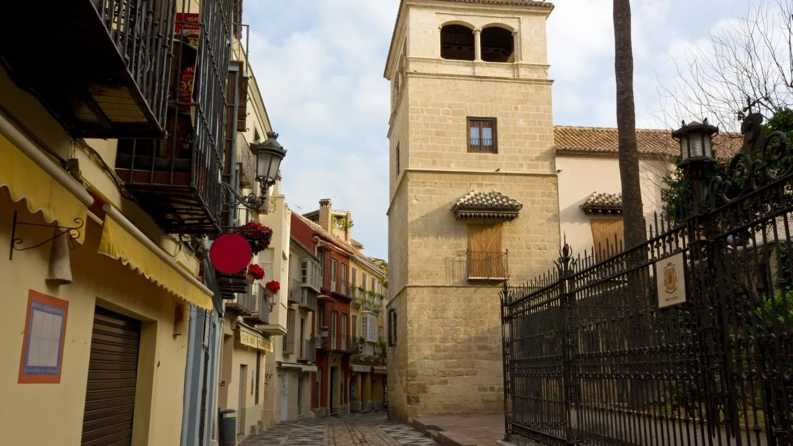
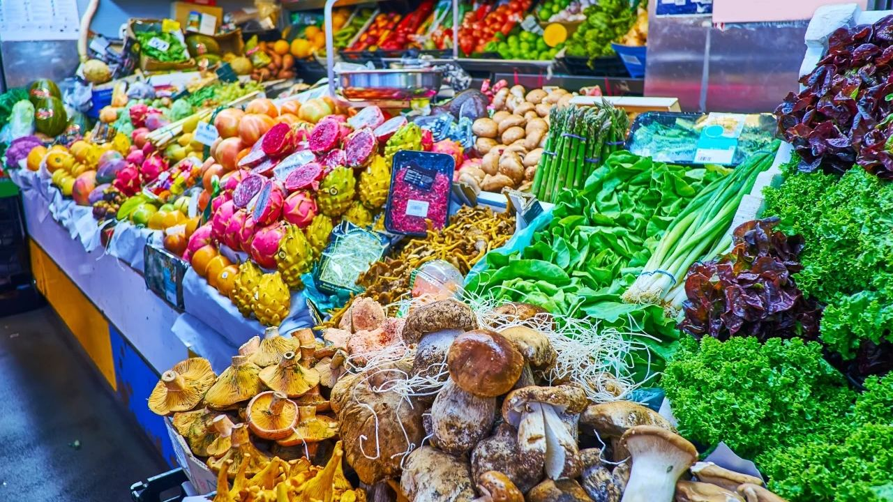
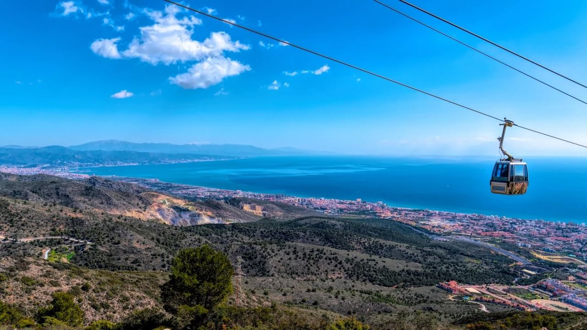
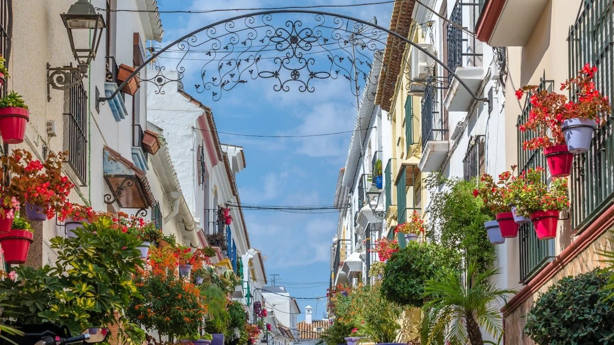
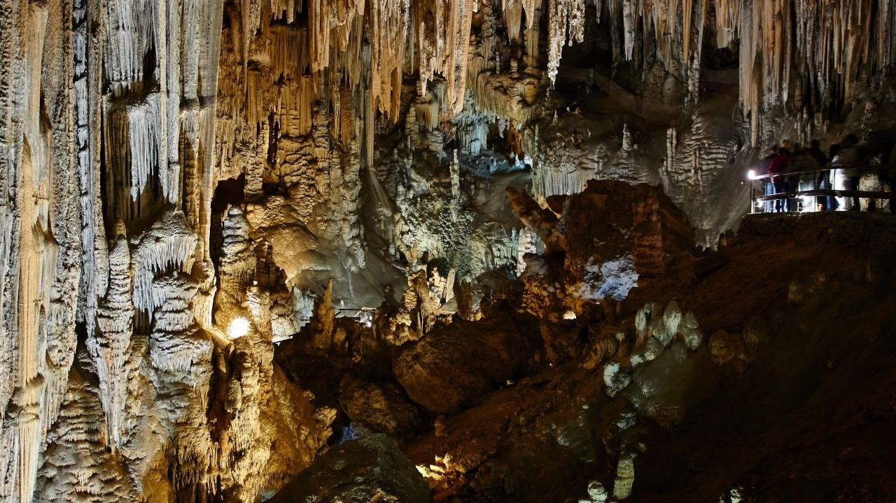
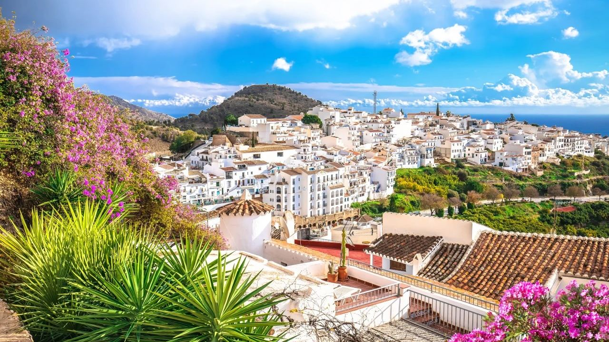

Orte · Costa del Sol
Costa del Sol: Die 10 schönsten Sehenswürdigkeiten
 Von Aleksandra Kobus · · aktualisiert · 3 Min. Lesezeit
Von Aleksandra Kobus · · aktualisiert · 3 Min. Lesezeit

Kurz gesagt: Die Costa del Sol erstreckt sich über rund 150 km entlang der Küste der Provinz Málaga. Die wichtigsten Sehenswürdigkeiten liegen in Málaga (die maurische Alcazaba, die Kathedrale, das Picasso-Museum und der Markt Atarazanas), in Benalmádena (Seilbahn auf den Calamorro und Puerto Marina), in Fuengirola (Zoo Bioparc), in Estepona (die blumengeschmückte Altstadt) und im Osten (die Höhlen von Nerja und das weiße Dorf Frigiliana). Alle sind höchstens etwa eine Stunde vom Flughafen Málaga entfernt.
Die Costa del Sol ist vor allem für Strände und Golf bekannt, doch römisches, maurisches und modernes Spanien liegen nur eine kurze Fahrt entfernt. Málaga ist eine der spannendsten Städte des Landes geworden, und die weißen Dörfer in den Bergen sind nur eine halbe Stunde vom Meer entfernt.
Diese zehn Orte geben einen guten Eindruck von der Küste, ob im Urlaub oder bei einer Erkundungsreise vor dem Kauf.
1. Die Alcazaba von Málaga

Die maurische Festung mitten in Málaga entstand überwiegend im 11. Jahrhundert, mit Innenhöfen, Brunnen, Gärten und Blick auf den Hafen. Zu ihren Füßen liegt ein römisches Theater aus dem 1. Jahrhundert v. Chr., und ein Weg führt hinauf zur Burg Gibralfaro aus dem 14. Jahrhundert mit dem besten Panorama der Stadt.
2. Die Kathedrale von Málaga

Der Bau der Kathedrale begann im 16. Jahrhundert und dauerte über 250 Jahre, daher die Mischung aus Renaissance und Barock. Ein Turm wurde nie fertig, deshalb heißt sie im Volksmund La Manquita, „die Einarmige“. Eine Führung über das Dach bietet tolle Blicke auf die Altstadt.
3. Picasso-Museum Málaga

Pablo Picasso wurde 1881 in Málaga geboren. Das 2003 eröffnete Museum im Palacio de Buenavista aus dem 16. Jahrhundert zeigt eine große Sammlung seiner Werke, gestiftet von seiner Familie. Sein Geburtshaus an der Plaza de la Merced, wenige Minuten entfernt, ist ebenfalls ein kleines Museum.
4. Markthalle Atarazanas

Málagas Zentralmarkt steht in einer Eisenhalle aus dem 19. Jahrhundert, die das maurische Tor der alten Werft bewahrt hat. Morgens kommen für Fisch, Obst, Oliven und Schinken und an einer der Bars in der Halle frittierten Fisch oder Tapas probieren.
5. Seilbahn Benalmádena

Die Seilbahn fährt in rund 15 Minuten auf den Gipfel des Calamorro (771 m). Von den Aussichtspunkten sieht man die ganze Küste und an klaren Tagen Gibraltar und die Berge Nordafrikas. Oben gibt es Wanderwege und Greifvogelvorführungen.
6. Puerto Marina, Benalmádena
Der Hafen von Benalmádena hat rund 1.000 Liegeplätze und eine ungewöhnliche, bunte Architektur mit Wohnungen auf kleinen Inseln. Er ist voller Restaurants und Bars und beherbergt das Sea-Life-Aquarium, ideal für Familien.
7. Bioparc Fuengirola
Ein Zoo mitten in Fuengirola, in dem Tiere aus den Tropenwäldern Afrikas, Madagaskars und Südostasiens in nachgebildeten Lebensräumen ohne Gitter leben. Kompakt, schattig und ideal für Kinder.
8. Estepona

Estepona heißt „Garten der Costa del Sol“: Die weißen Gassen der Altstadt sind mit Tausenden Blumentöpfen geschmückt, jede Straße in einer anderen Farbe. Dazu eine lange Promenade, große Wandbilder, ein botanischer Garten und ein entspannter Hafen.
9. Die Höhlen von Nerja

Die 1959 zufällig entdeckte Cueva de Nerja beim Dorf Maro ist ein riesiges Höhlensystem mit gewaltigen Tropfsteinen und prähistorischen Malereien. Der Rundgang dauert etwa 45 Minuten, im Sommer findet hier ein Musikfestival statt.
10. Frigiliana

Wenige Kilometer oberhalb von Nerja ist Frigiliana eines der schönsten weißen Dörfer Andalusiens, mit steilen Pflastergassen, Blumen, maurischer Geschichte und Blick aufs Meer. Am besten früh morgens oder spät am Tag, wenn die Tagesausflügler weg sind.
Häufige Fragen
Wofür ist die Costa del Sol bekannt?
Für Strände, Golf und rund 300 Sonnentage im Jahr, aber auch für Málagas Museen und maurische Bauten und die weißen Dörfer in den Bergen.
Welcher ist der schönste Ort an der Costa del Sol?
Viele nennen Frigiliana im Osten und die Blumen-Altstadt von Estepona im Westen. Auch die Altstadt von Marbella ist sehr reizvoll.
Wie lange fährt man die Costa del Sol entlang?
Von Nerja bis Estepona sind es rund 140 km, etwa 1 Stunde 30 Minuten über die Autobahn.
Ist die Costa del Sol gut für Familien?
Ja. Bioparc Fuengirola, das Sea-Life-Aquarium in Benalmádena, die Seilbahn und die Höhlen von Nerja sind bei Kindern sehr beliebt.
Vom Besucher zum Bewohner
Viele unserer Kunden haben die Costa del Sol im Urlaub kennengelernt und kamen später zurück, um ein Zuhause zu suchen. Wenn Sie darüber nachdenken, schreiben Sie uns. Wir zeigen Ihnen die Orte, die zu Ihnen passen.
Quellen: Málaga city tourism · Museo Picasso Málaga · Cueva de Nerja Foundation · Costa del Sol Tourist Board